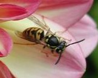
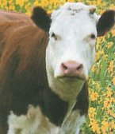

Friday, March the 19th, 2004
back to: title, date or indexes
There is good news from the Pang Hill Orphanage. The philanthropist Guesbaldo Sopwith—he whose fortune derives from the Unnerving Cakes & Pastries franchise—has donated six cows and a bee to the crumbling and storm-tossed institution, to bring a spark of light, albeit minuscule, into the lives of the woebegone tots. In announcing his largesse, Mr Sopwith said: “The orphans may be shabby little guttersnipes, but I had a spare half dozen cows, so after long deliberation and much chewing of freshly-picked gloxinia and harebells, I decided to let them loose in the orphanage garden, or what passes for a garden. The bee was my wife's suggestion, and a very good one, I think.”

Top row, left to right : Corky, Zimbalist, a bee, Fleur. Bottom row, left to right : Fading cow, Pookie, Arbogast.